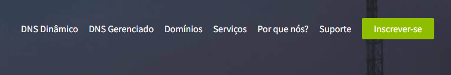
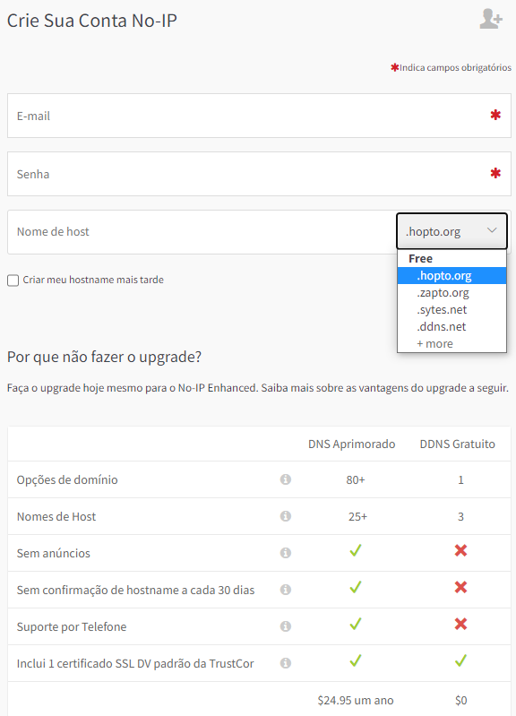
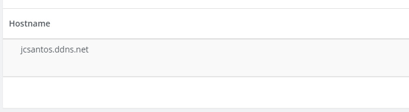
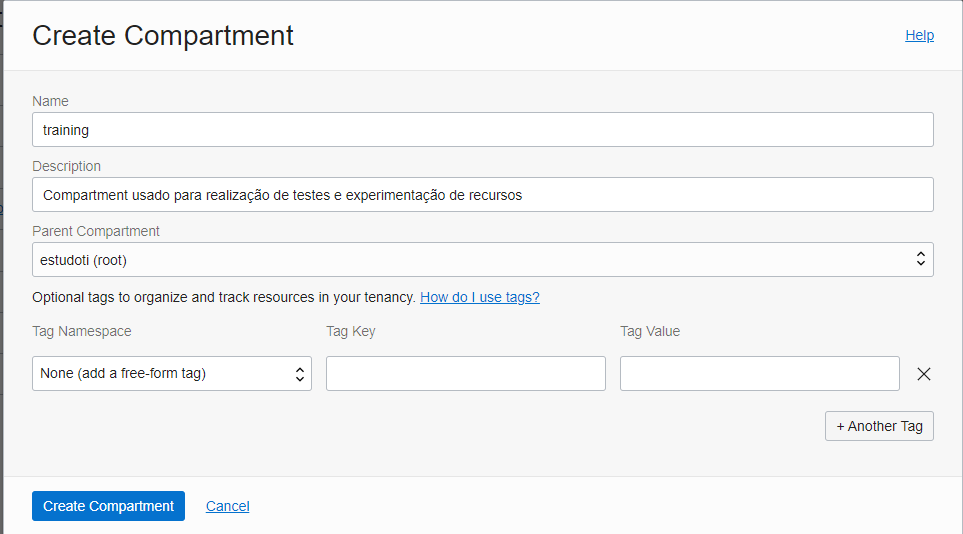
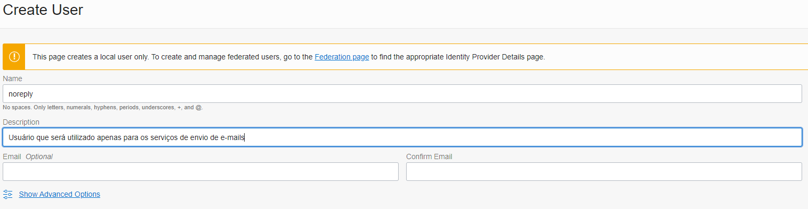

Configurar o Serviço Email Delivery da OCI e utilizar no Ansible
Nesse post mostrarei como configurar e utilizar o serviço de e-mail do provedor Oracle Cloud Infrastructure (Email Delivery) e enviar um e-mail através do Ansible.
Requisitos:- Ter uma conta ativa na OCI
- Já ter conhecimento prévio da console na OCI
- Já ter o programa Ansible instalado e funcionando
- Saber executar playbook no Ansible
- Ter um domínio ativo (mostrarei como criar um de forma gratuita)
O Oracla Cloud Infrastructure Email Delivery é um serviço de e-mail que fornece uma solução para gerenciamento no envio de e-mails com capacidade para altos volumes. Quando ativado em sua conta é possível usar as configurações de SMTP para enviar e-mails como, por exemplo, usando linguagens de programação ou ferramentas de automação (nesse poste veremos como usar no Ansible). Existe uma serie de benefícios quando se contrata esse serviço, mas para conhecer melhor sobre ele sugiro que visite a página de Visão Geral do Serviço Email Delivery.
Antes de iniciarmos a configuração do serviço Email Delivery vamos primeiro criar um domínio utilizando o site noip.com, para em seguida fazermos o passo a passo da configuração do serviço na OCI.
Nota:
Se você já tem um domínio que pode ser utilizado, então, pode pular essa parte e ir direto para configuração do Email Delivery
Criando o Domínio
Para criar um domínio no site No-IP é necessário realizar um cadastro prévio. Geralmente o link de cadastro está destacado como um botão e tem o texto Inscrever-se. O processo de cadastro é muito simples. Vamos lá.
Tela Inicial com botão de inscrição

Após clicar no botão temos o formulário de cadastro onde você deve inserir os dados solicitados. Note na imagem abaixo que existe duas opções de criação do domínio: pago e gratuito. O nosso exemplo será para versão gratuita que nos fornece uma espécie de subdomínio. Por exemplo, se eu digitar na caixa Nome do host o domínio meusite e escolher no combo a opção .sytes.net o nome completo ficaria assim: meusite.sytes.net.

Em seguida você recebera no seu e-mail cadastrado, uma mensagem de confirmação para concluir o processo de cadastro. Quando concluir o cadastro faça o login no site para visualizar o domínio que você escolheu e que foi criado no site. No menu lateral acesse a opção DNS Dinâmico > Pessoal Hostnames e será possível visualizar o domínio que foi criado.

Pronto o seu domínio já foi criado! No meu caso criei o domínio jcsantos.ddns.net mostrado na figura acima. Agora vamos partir para configuração do serviço Email Delivery.
Configurando o Email Delivery
Vamos agora configurar o serviço Email Delivery para depois realizarmos um teste de envio de e-mail usando o Ansible.
Primeiro vamos criar um Compartment para organizar melhor o nosso novo recurso. Vá para o menu hamburguer e selecione as opções Identity & Security > Compartments. Em seguida clique no botão Create Compartment e preencha os dados do formulário conforme exemplo abaixo.

Clique no botão Create Compartment para confirmar a criação do novo objeto. Certo, agora vamos criar o usuário que terá autorização para usar o serviço de e-mail. Clique na opção Users do menu lateral em seguida clique no botão Create User e será apresentado o formulário de preenchimento dos dados do novo usuário.

Abaixo está o script de criação manual das politicas de acesso ao serviço:
Allow group EmailGroupService to manage credentials in compartment training where target.credential.type = 'smtp'
Allow group EmailGroupService to manage email-family in compartment training
Allow group EmailGroupService to manage suppressions in tenancy
Allow group EmailGroupService to manage log-groups in compartment training
Allow group EmailGroupService to manage approved-senders in compartment training
Allow group EmailGroupService to read log-content in compartment training